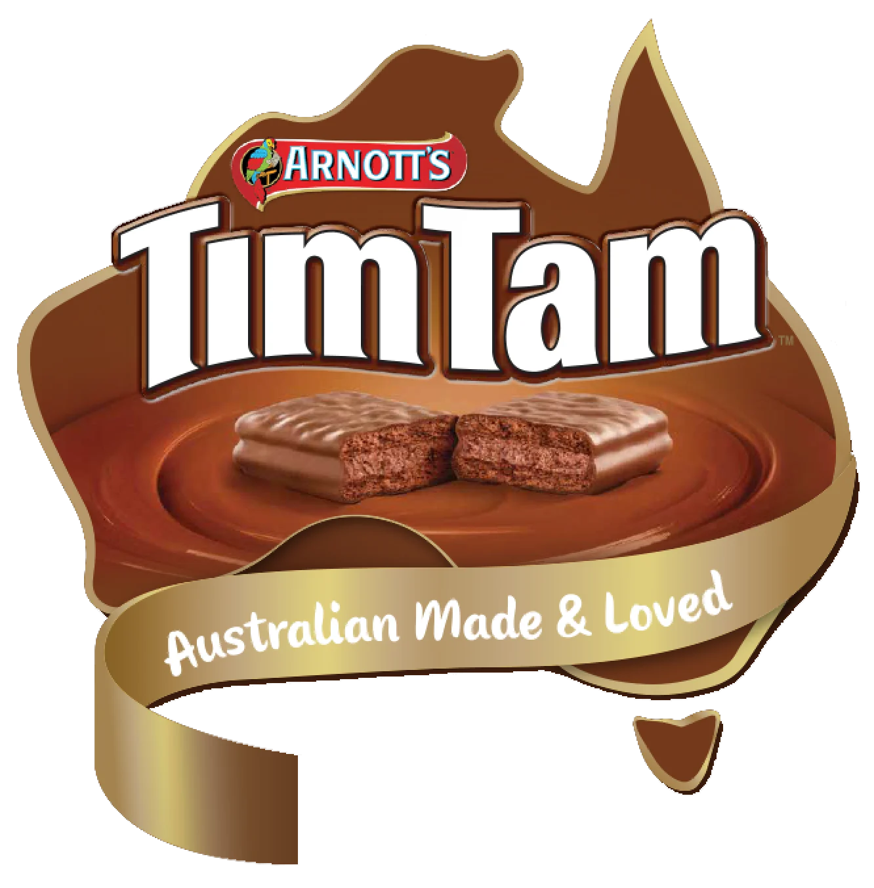

Yak's Cookies
Homepage

This is another one of those I actually don't have the recipe for this delicious delight...
It's just something you have to stumble upon y'know.
Ingredients
- Something about sugar
- Something about spice
- Something about doing everything nice and easy breezy.
- You couldn't pay me To make something like this up
- And you know what? This is the type shit that makes the people go crazy fam!
Nitty Gritty Steps
- Yeah so... This is where the fun begins with learning these commands n dat.
- It must be really fun to be abke to write whatever you want and pass it off as a website. haha
- Is this the kind of catharsis that personal blogger feels? That's some crazy ass shit.
- Anyway, here's wonderwall big dawg.
